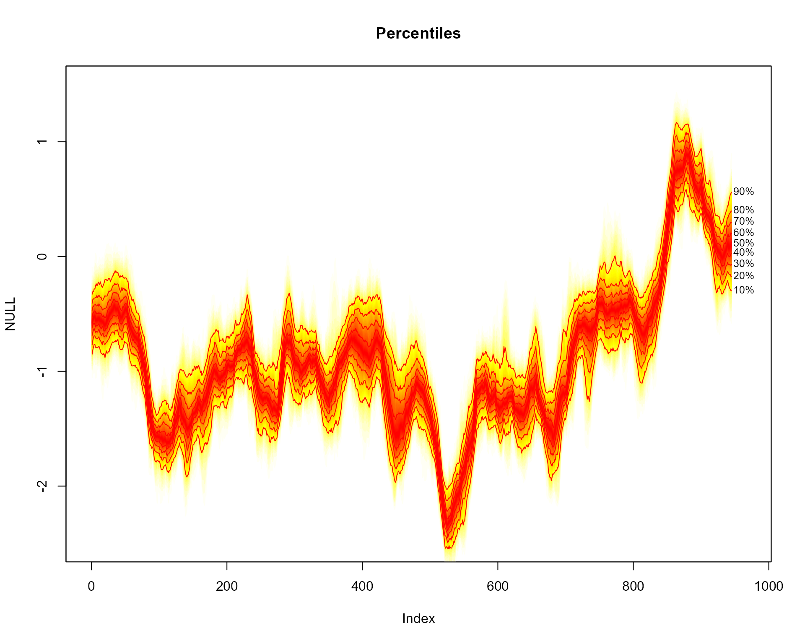
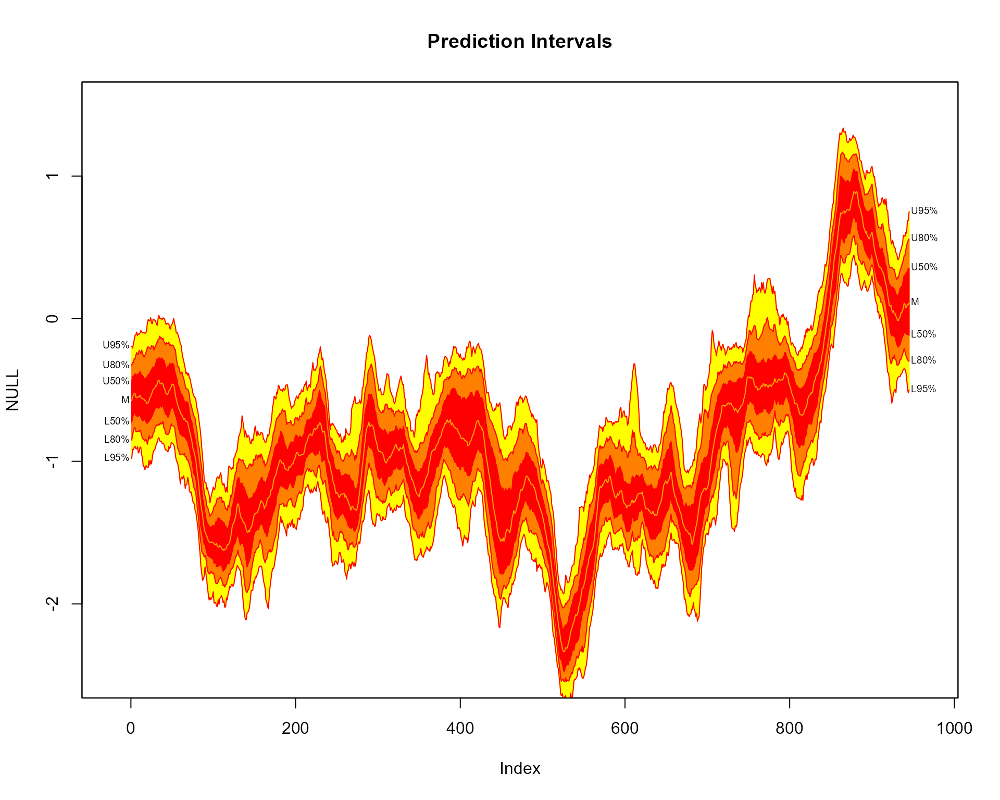
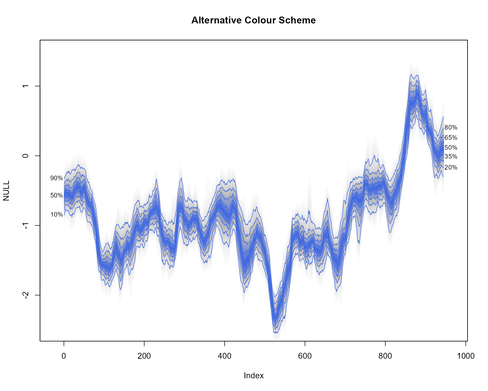
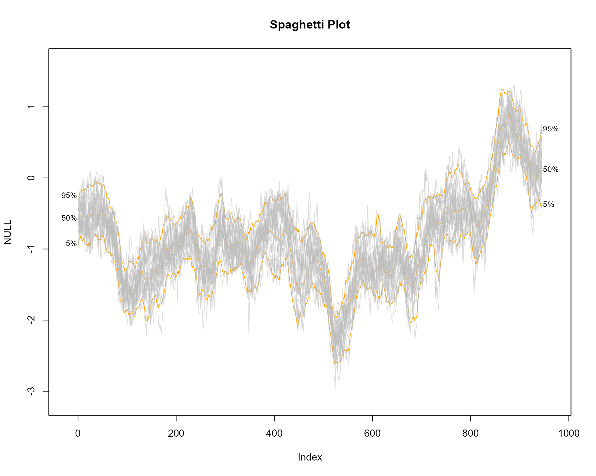
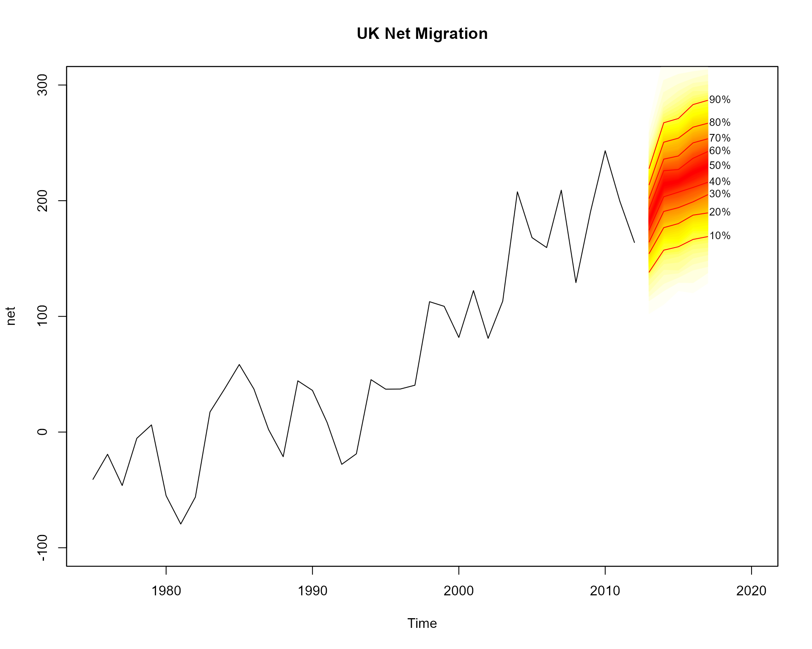

Visualising Time Series Model Results
The fanplot package is designed to help display uncertainty in
estimates from time series models. To illustrate, the packages
th.mcmc data frame object contains posterior density
distributions of the estimated volatility of daily returns \(y_t\) from the Pound/Dollar exchange rate
from 02/10/1981 to 28/6/1985. These distributions are from a MCMC
simulation from a stochastic volatility model given in
Meyer
and Yu (2002) where it assumed;
\[ y_t | \theta_t = \exp\left(\frac{1}{2}\theta_t\right)u_t \qquad u_t \sim N(0, 1) \qquad t=1,\ldots,n. \]
The latent volatilities \(\theta_t\), which are unknown states in a state-space model terminology, are assumed to follow a Markovian transition over time given by the state equations:
\[ \theta_t | \theta_{t-1}, \mu, \phi, \tau^2 = \mu + \phi \log \sigma^2_{t-1} + v_t \qquad v_t \sim N(0, \tau^2) \qquad t=1,\ldots,n \]
with \(\theta_0 \sim N(\mu, \tau^2)\).
The th.mcmc object consists of (1000) rows corresponding
to MCMC simulations and (945) columns corresponding to each \(t\). A fan chart of the evolution of the
distribution of \(\theta_t\) can be
visualised using the fanplot package via,
library(fanplot)
# empty plot
plot(NULL, main="Percentiles", xlim = c(1, 965), ylim = c(-2.5, 1.5))
# add fan
fan(data = th.mcmc)
The fan() function calculates the values of 100 equally
spaced percentiles of each future distribution when the default
data.type = "simulations" is set. This allows 50 fans to be
plotted from the heat.colours colour palette, providing a
fine level of shading. In addition, lines and labels are provided along
each decile.
Prediction Intervals
When argument type = "interval" is set, the
probs argument corresponds to prediction intervals.
Consequently, the fan chart comprises of 3 different shades, running
from the darkest shade for the 50th prediction interval to the lightest
for the 95th prediction interval.
# empty plot
plot(NULL, main="Prediction Intervals", xlim = c(-20, 965), ylim = c(-2.5, 1.5))
# add fan
fan(data = th.mcmc, type = "interval", llab=TRUE, rcex=0.6)
Contour lines are overlayed for the upper and lower bounds of each
prediction intervals, as set using the ln command. A
further line is plotted along the median of \(\theta_t\), which is controlled by the
med.ln argument (set to TRUE by default when
type="interval"). The default labels on the right hand side
correspond to the upper and lower bounds of each plotted line. The left
labels are added by setting llab = TRUE. Note, some extra
room is created for the labels by setting the
xlim = c(-20, 965) argument of plotting area to a wider
range than the original data (945 observations). The text size of the
right labels are controlled using the rcex argument. The
left labels, by default, take the same text size as rcex
although they can be separately controlled using the lcex
argument.
Alternative Colours
Alternative colour schemes to the default heat.colors,
can be obtained by supplying a colorRampPalette to the
fan.col argument. For example, a new palette running from
blue to white, via grey can be passed using;
# empty plot
plot(NULL, xlim = c(-20, 965), ylim = c(-2.5, 1.5), main="Alternative Colour Scheme")
# add fan
fan(data = th.mcmc, rlab=seq(20,80,15), llab=c(10,50,90), fan.col=colorRampPalette(c("royalblue", "grey", "white")))
Alternative labels are specified using the rlab and
llab arguments.
Spaghetti Plots
Spaghetti plots can be used to represent uncertainty shown by a range
of possible future trajectories or past estimates. For example using the
th.mcmc object, 20 random sets of \(\theta_t\) can be plotted when setting the
argument style = "spaghetti";
# empty plot
plot(NULL, main="Spaghetti Plot", xlim = c(-20, 965), ylim = range(th.mcmc))
# transparent fan with visible lines
fan(th.mcmc, ln=c(5, 50, 95), llab=TRUE, alpha=0, ln.col="orange")
# spaghetti lines
fan(th.mcmc, style="spaghetti", n.spag=20)
The spaghetti lines are superimposed on a fan chart in order to
illustrate some underlying probabilities. The initial fan chart is
completely transparent from setting the transparency argument
alpha to 0. In order for the percentile lines to be visible
a non-transparent colour is used for the ln.col
argument.
Forecast Fans
The fanplot package can also be used to illustrate probabilistic
forecasts. For example, using the auto.arima function in
the
forecast
package a model for the time series for net migration to the United
Kingdom (contained in the ips data frame of the fanplot
package) can be fitted.
#create time series
net <- ts(ips$net, start = 1975)
#fit model
library(forecast)
m <- auto.arima(net)
m## Series: net
## ARIMA(1,1,2) with drift
##
## Coefficients:
## ar1 ma1 ma2 drift
## -0.2301 -0.0851 -0.6734 6.7625
## s.e. 0.3664 0.3571 0.1898 1.3961
##
## sigma^2 = 1343: log likelihood = -184.28
## AIC=378.56 AICc=380.5 BIC=386.62We may then simulate 1000 values from the selected model using the
simulate.Arima function, and plot the results.
mm <- matrix(NA, nrow=1000, ncol=5)
for(i in 1:1000)
mm[i,] <- simulate(m, nsim=5)
# empty plot
plot(net, main="UK Net Migration", xlim=c(1975,2020), ylim=c(-100,300))
# add fan
fan(mm, start=2013)
Users might want to connect the fan with the past data. This can be
achieved by providing the last value to the anchor argument. More shades
for the fan are added to the plot (over the default 3 used for a
interval fans) by supplying a sequence to the probs
argument. Alternative contour lines (from the default median, 50th, 80th
and 95th percentiles for interval fans) are added using the
ln argument.